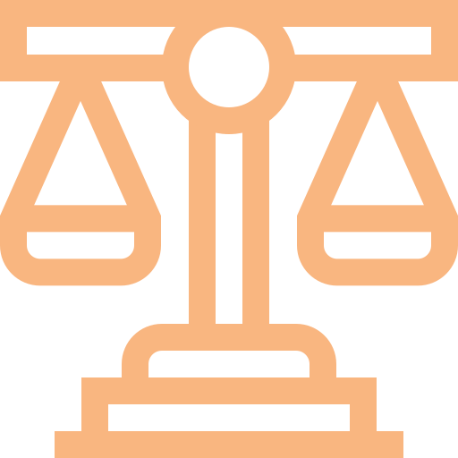
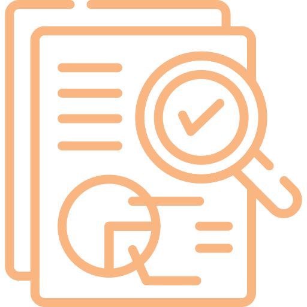
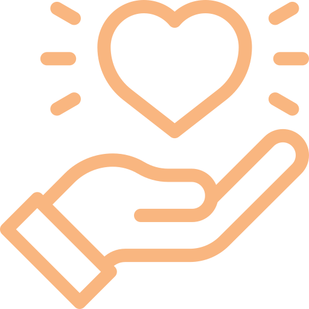
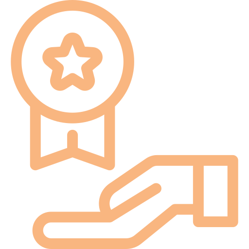
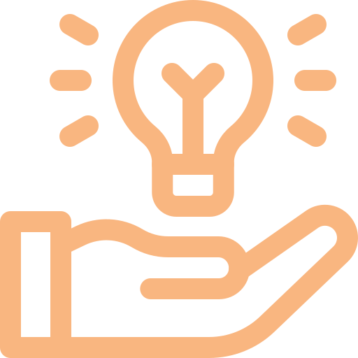
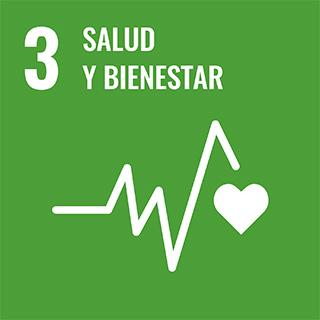

Nuestra intervención está basada en el "Objetivo de Desarrollo Sostenible" número 3.
ODS 3
"Garantizar una vida sana y promover el bienestar para todos en todas las edades"
Ante la falta y necesidad de apoyo a la mujer de escasos recursos diagnosticada con cáncer, la mujer tenía que recurrir a las ciudades abandonando su lugar de origen sin tener un lugar donde hospedarse, obligándola a quedarse desprotegida en los estacionamientos de los hospitales.
Es así como inicia CRUZ ROSA, en julio 2004, siendo el primer albergue exclusivo para mujeres con diagnóstico de cáncer en Monterrey N.L., con el objetivo de apoyarlas a ellas y su familia.
En 2011 se abre un segundo apoyo especializado y CRUZ ROSA cuenta con sede en la zona central de México.


CRUZ ROSA ABP es una asociación de beneficencia privada sin fines de lucro constituida el 5 de mayo de 2004, ante el Lic. Carlos Montaño Pedraza, Notario Público Titular de la Notaría Pública número 130 con ejercicio en este Primer Distrito.
Con fecha del 11 de junio de 2004, la Administración General Jurídica del Servicio de Administración Tributaria (SAT), emitió a Cruz Rosa ABP., la constancia de autorización:
Esta autorización nos permite costear tratamientos médicos, otorgar apoyo económico, material, emocional y psicológico a mujeres de escasos recursos, así como establecer albergues y centros de convalecencia.
Incidir sobre los índices de mortalidad en mujeres de escasos recursos con diagnósticos de cáncer que no logran atenderse oportunamente.
Brindar un trato digno y calidad de vida a mujeres y sus familias, poniendo a su disposición un albergue especializado con atención integral.
Atender de manera inmediata a pacientes y sus familiares brindando orientación a través de los módulos instalados en instituciones de salud.
Promover la detección oportuna del cáncer y la responsabilidad en el cuidado de la salud.
Institución reconocida a nivel nacional por su impacto y transparencia, logrando tener voz en las políticas públicas; con un modelo integral multiservicios único en México en colaboración con diversos sectores, donde la mujer de escasos recursos diagnosticada con cáncer logre llevar a buen término su tratamiento y afianzando una esperanza de vida.






Nuestra intervención está basada en el "Objetivo de Desarrollo Sostenible" número 3.
"Garantizar una vida sana y promover el bienestar para todos en todas las edades"
Cruz Rosa aplica un Modelo de Intervención Psicosocial, donde integra las dimensiones psicológicas y sociales para una visión holística de la paciente, y así lograr brindarles un acompañamiento integral durante su proceso oncológico, basado en nuestra teoría de cambio.
CRUZ ROSA es una asociación de beneficencia privada con más de 20 años ininterrumpidos apoyando asistencialmente a mujeres en situación de vulnerabilidad con cualquier diagnóstico de cáncer, con un albergue especializado y un acompañamiento integral enfocado en brindarles un trato digno y calidad de vida, siendo este un modelo único en todo México.
Empresas
Rendimiento
Autofinanciamiento
Convocatorias
Gobierno